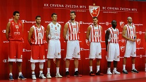
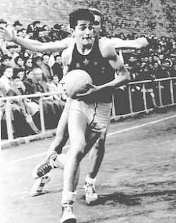
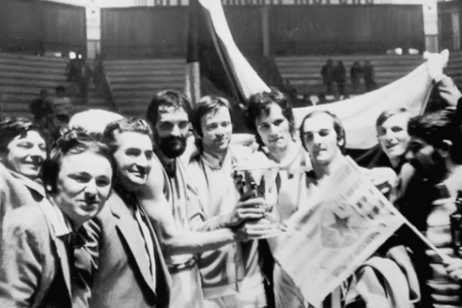
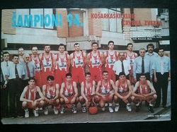
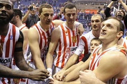
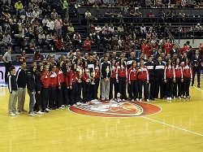

О КЛУБУ
КК Црвена звезда српски је професионални кошаркашки клуб из Београда. Део је спортског друштва Црвена звезда. Црвена звезда се такмичи у Кошаркашкој лиги Србије и домаћем Купу Радивоја Кораћа, и није испадао из прве националне лиге. Такође, чини Јадранску кошаркашку асоцијацију и такмичи се у АБА лиги, која одређује који ће се тимови такмичити у Евролиги а који у Еврокупу. Према УЛЕБ-овој листи Звезда је најбоље рангиран клуб од свих српских клубова, као и свих клубова из Јадранске лиге. Црвена звезда као домаћин утакмице игра у хали Пионир, саграђеној 1973, са капацитетом од 5.878 седећих места, док утакмице у Европским такмичењима игра и у Штарк арени са предвиђеним капацитетом од 18.386 седећих места.
ИСТОРИЈА
Кошаркашки клуб Црвена звезда као посебна секција основан је истог дана када и Спортско друштво, 4. марта 1945. године. У првим месецима постојања Црвене звезде највише се радило на логистици: поправљао терен, набављали кошеви, шили дресови и остало. Када је све ово учињено, започета је селекција играча који ће освојити велики број одличја. Првих десет година постојања, представља златно доба КК Црвена звезда. Освојено је десет узастопних титула државног првака. Синоним за кошарку био је Мали Калемегдан, где је Звезда и играла у првим годинама свога постојања.
Након тога, наступио је резултатски пад, смена генерација и требало је да прође 14 дугих година да би се стигло до нове, једанаесте шампионске звездице. Ту, толико чекану титулу Црвена звезда је освојила у сезони 1968/69. захваљујући и томе што је најбоље партије пружала против најјачих противника. По два пута победила је Југопластику, Задар и Партизан. Предвођени Владимиром Цветковићем до титуле су дошли Драган Капичић, Зоран Лазаревић, Иван Сарјановић, Љубодраг Симоновић, Срђан Шкулић, Зоран Славнић, Тихомир Павловић, Немања Ђурић, Мирослав Тодосијевић, Драгиша Вучинић и Дубравко Капетановић и то је до тада био најмлађи шампионски тим у југословенској кошарци.
Дванаеста титула по реду освојена је у сезони 1971/72 , а онда је пласман нашег клуба у првенству опадао из сезоне у сезону. Ипак, тих седамдесетих година црвено-бели су три пута постали победници Купа, а највећи део терета носила је екипа чију су окосницу чинили Славнић, Капичић, Симоновић, Лазаревић, Вучинић, Пешић, Живковић, Грујичић, Граси, Латифић, Горан Ракочевић и Јовановић.
Након тих успеха, КК Црвена звезда је у наредним сезонама бележила просечне резултате. У сезони 1975/1976. освојена је 5. позиција у првенству, а у купу је забележен пораз у 3. колу од ОКК Београда. Те сезоне је шампион по први пут био Партизан. У периоду од сезоне 1976/77. до сезоне 1979/80, клуб је бележио прилично лоше резултате.
Тринаеста шампионска звездица пришивена је 1993. године и то после 21 године поста. Слављена је дуго, заједно са навијачима, јер је и чекана дуго. У петој утакмици финала плејофа надигран је Партизан, а за титулу првака заслужни су сви играчи: Саша Обрадовић, Небојша Илић, Зоран Јовановић, Миле Маринковић, Никола Јовановић, Милета Лисица, Дејан Томашевић, Драгољуб Видачић, Александар Трифуновић, Растко Цветковић, Слободан Каличанин, Предраг Стојаковић и Срђан Јовановић.
У наредној сезони Црвена звезда је још убедљивије дошла до 14. титуле државног првака.У финалу плеј-офа декласиран је вечити ривал, Партизан са 4:1 у победама. Своју 15. шампионску титулу наши кошаркаши су освојили 1998. године.
Прелаз у нови миленијум донео је нове потешкоће у функционисању КК Црвена звезда. Наредних година дошло је до великих осцилација како у резултатима тако и у самој организацији клуба.
Сезона 2014/15. је била најуспешнија у историји Црвене звезде, и може се назвати сезоном рекорда. У прелазном року отишло је доста искусних играча али су дошли репрезентативци Јовић и Калинић, као и репрезентативац Немачке Мајк Цирбес. Највеће појачање добијено је у одличном плејмејкеру Маркусу Вилијамсу. Црвена звезда је у тој сезони успела да обори неколико рекорда. У Јадранској лиги успела је да оствари најдужи низ победа од старта шампионата (20), као и да изједначи рекорд у укупном скору. У Евролиги се по први пут пласирала у топ 16 фазу и то као први српски тим који је то урадио са позитивним скором победа и пораза. То је урађено са најмлађим тимом у Евролиги и уз највећу просечну посету на утакмицама Евролиге.
Ипак, оно што је најбитније, Звезда је успела да освоји три титуле. Најзначајније је освајање АБА лиге и поновни пласман у Евролигу. За навијаче је било још значајније освајање титуле шампиона Србије после 17 година, и то победом од 3 : 0 у серији против Партизана. Након Пионира титула је слављена целе ноћи на Малом Калемегдану. Сезону је обележио и Бобан Марјановић који је уврштен у идеалну петорку Евролиге и који је и сам оборио неколико статистичких рекорда.
МЛАЂЕ КАТЕГОРИЈЕ
Иако је сва пажња углавном усмерена на резултате првог тима, Црвена звезда има дугу традицију у раду са млађим категоријама. Наравно, све млађе селекције су и у резултатском смислу увек биле у врху како домаћих тако и међународних такмичења. Чак и када је први тим резултатски имао лоше сезоне, у млађим категоријама су изникли многи касније веома успешни играчи.
Циљ млађих категорија је пре свега формирање потпуних играча, али и њихово школовање које је омогућено јединственим системом образовања које се нуди деци. Поред тога, велики број играча свих узраста део је млађих репрезентативних селекција. Тако је само у 2014. години укупно 12 кошаркаша Звезде (6 у кадетском, 3 у јуниорском и 3 у узрасту до 20 година) било део неке од репрезентативних селекција Србије, које су при томе освојиле 2 медаље на првенствима на којима су наступале.